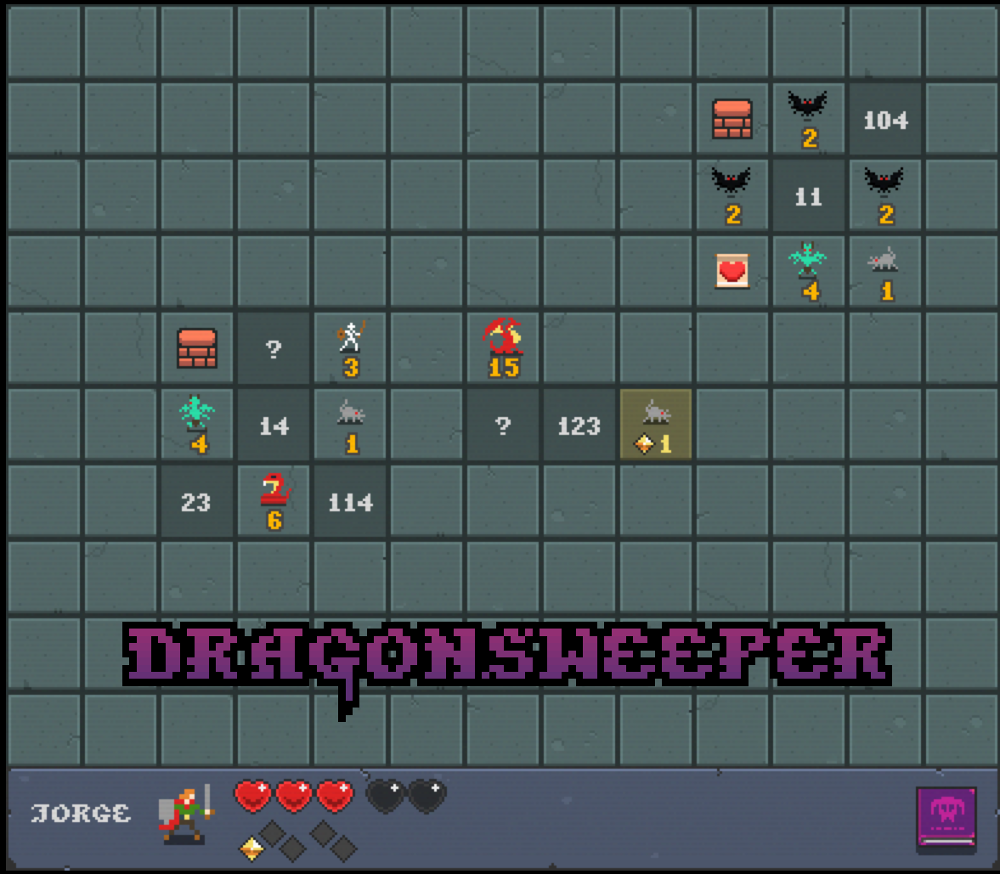

Game profile

Dragonsweeper
Every archived year-end list appearance, including placement and points earned.
About the Game
This is a standalone version of the minigame that players encounter at the end of Goldmine. Give it a try or check out the full version of Goldmine on Steam. It includes a few improvements, such as the ability to use a keyboard to play: Tab to traverse forwardShift + Tab to traverse backwardSpace or Enter to open (or to press dialog buttons)Shift + Space or Shift + Enter to flag
| Released | 2022-11-29 |
|---|---|
| Developer | Alaric von Teplitz |
| Genres | Puzzle |
| Platforms | Web |
minesweeper
Where to Buy
Game information provided by RAWG.
1List appearances
1Years represented
Points by Year
32025 points
List History
| Year | Source | List | Placement | Points |
|---|---|---|---|---|
| 2025 | Ars Technica | Ars Technica’s Top 20 video games of 2025 | Unranked | 3 |